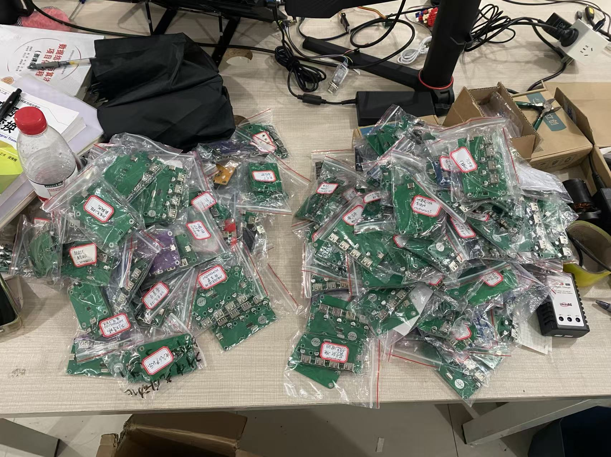
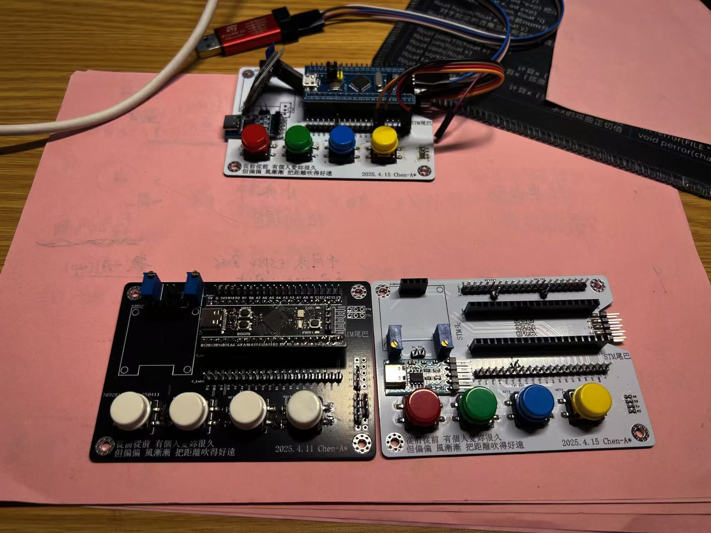
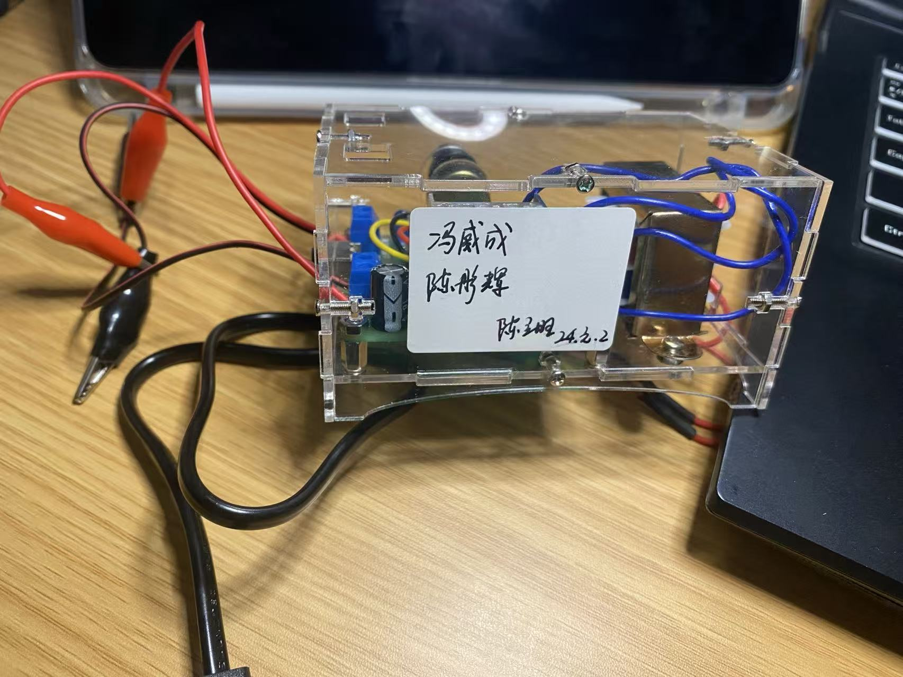
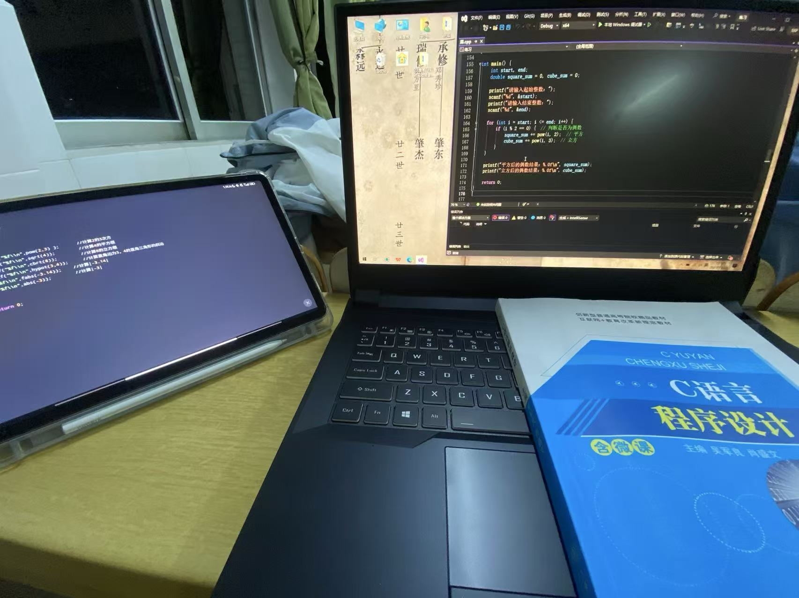
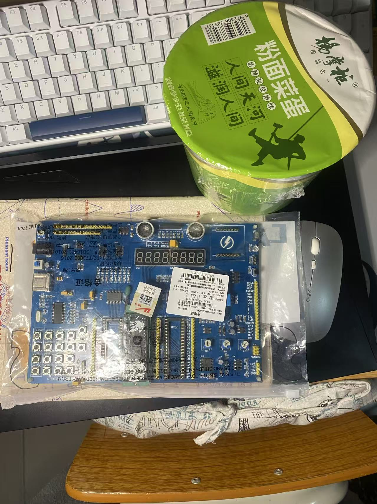
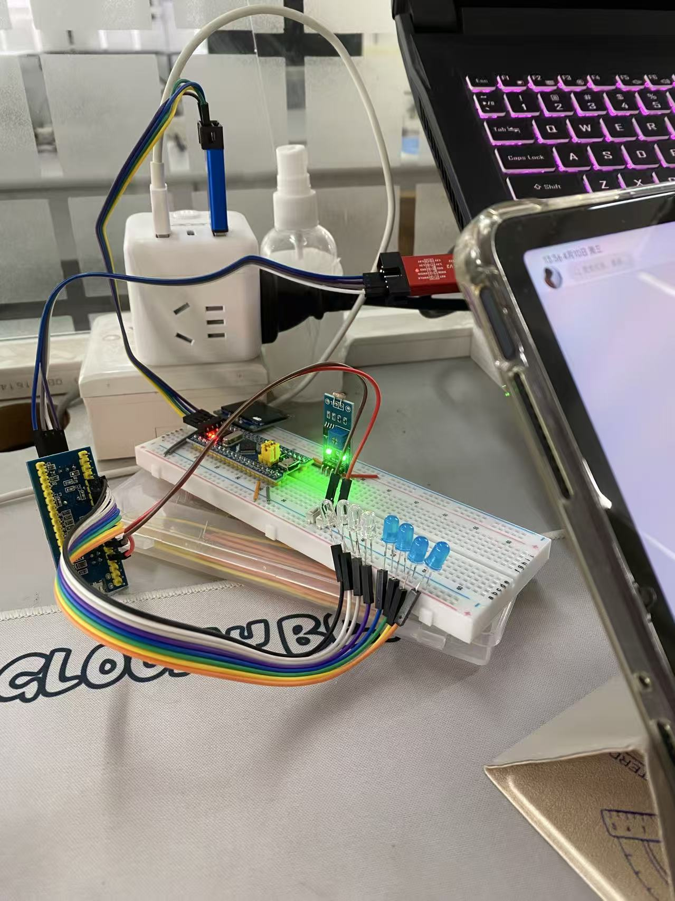
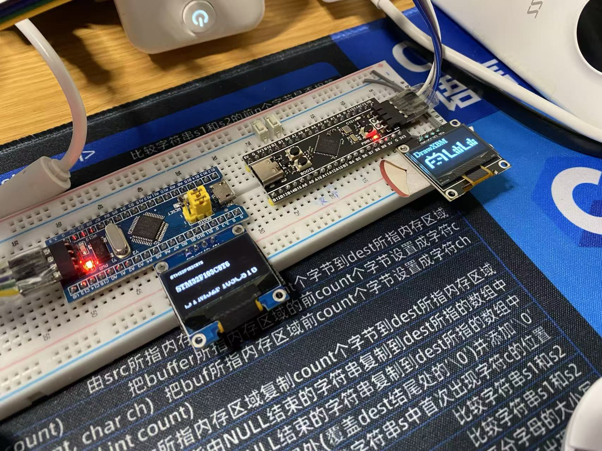
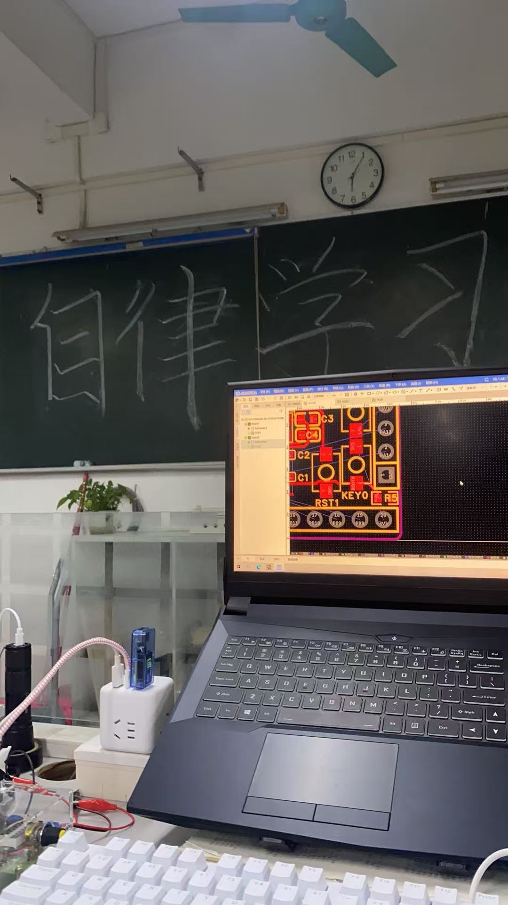
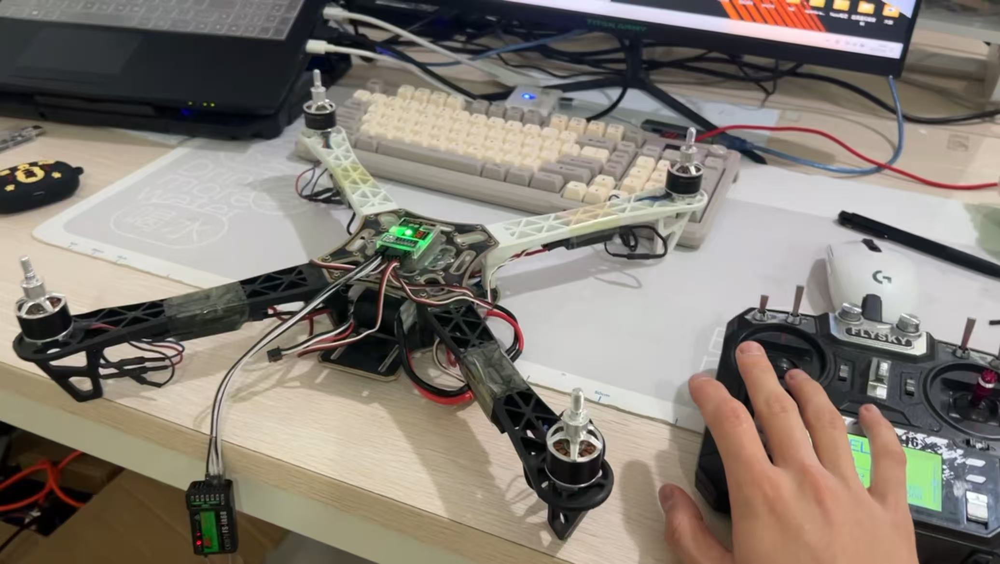
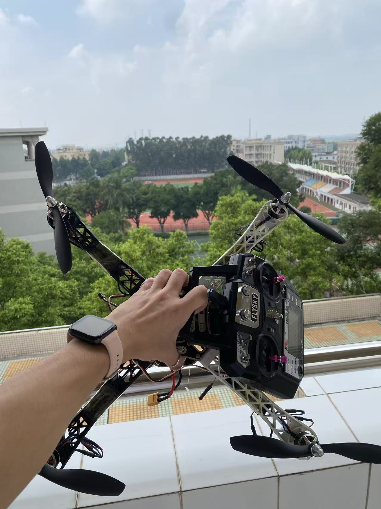

实践剪影
项目调试 · 硬件焊接 · 开发板学习 · 工程实践
该页面记录我的项目调试、硬件制作、开发板学习和工程实践照片。相比项目页面更关注最终成果，这里更关注实践过程本身，用于补充展示我在嵌入式学习中的真实动手能力、持续投入和板级调试经历。
项目实物与调试
记录嵌入式项目从开发板、PCB、外设到实物运行的过程，证明项目不是停留在文字描述，而是有真实硬件和上板验证。


硬件制作与焊接
记录焊接、飞线修复、电源调试和硬件测试过程，体现从原理图到实物调试的动手能力。

首次硬件焊接与飞线修复
第一次完整焊接硬件作品，并通过飞线修复问题，积累硬件排障经验。

协会板卡硬件测试
参与板卡测试和硬件检查，锻炼万用表测量、通断检查和上电验证能力。

电路学习板制作
通过制作学习板熟悉元器件焊接、基础电路连接和板级调试。

可调电源课程设计
完成从高压输入到低压可调输出的电源课程设计，积累电源模块和安全调试经验。

循迹小车制作
大一阶段完成的循迹小车制作，记录早期硬件入门和动手实践过程。
学习过程
记录从 C 语言、51 单片机、STM32 到嵌入式 Linux 开发板的学习路径，体现持续学习和逐步进阶。

C 语言学习记录
嵌入式开发的基础阶段，学习 C 语言语法、指针、结构体和程序逻辑。

51 单片机学习记录
从基础 IO、定时器、中断等内容入门单片机开发。

STM32 学习记录
学习 STM32 外设、OLED 显示和基础驱动开发。

STM32 OLED 显示学习
深入学习 STM32 外设驱动，完成 OLED 屏幕显示与交互实践。

电子协会学习记录
加入电子协会后的日常学习与实践记录，体现持续投入和技能积累。
无人机实践
记录无人机组装、调试和试飞过程，体现机电系统兴趣和动手实践能力。

无人机组装与测试
参与无人机装配、硬件检查和基础测试，了解飞控、电机和结构安装过程。

无人机试飞
完成无人机试飞验证，积累实物调试和安全操作经验。